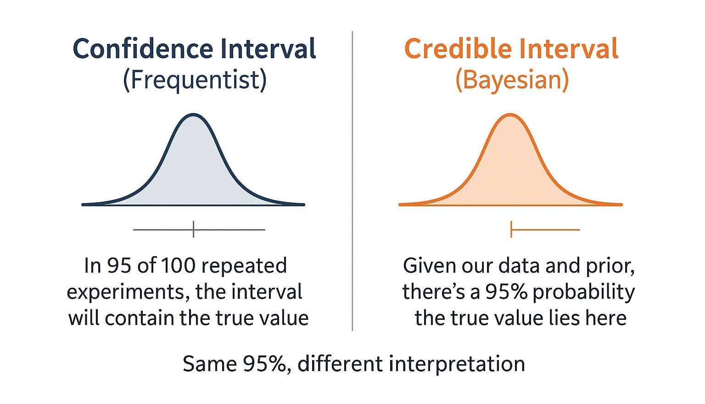
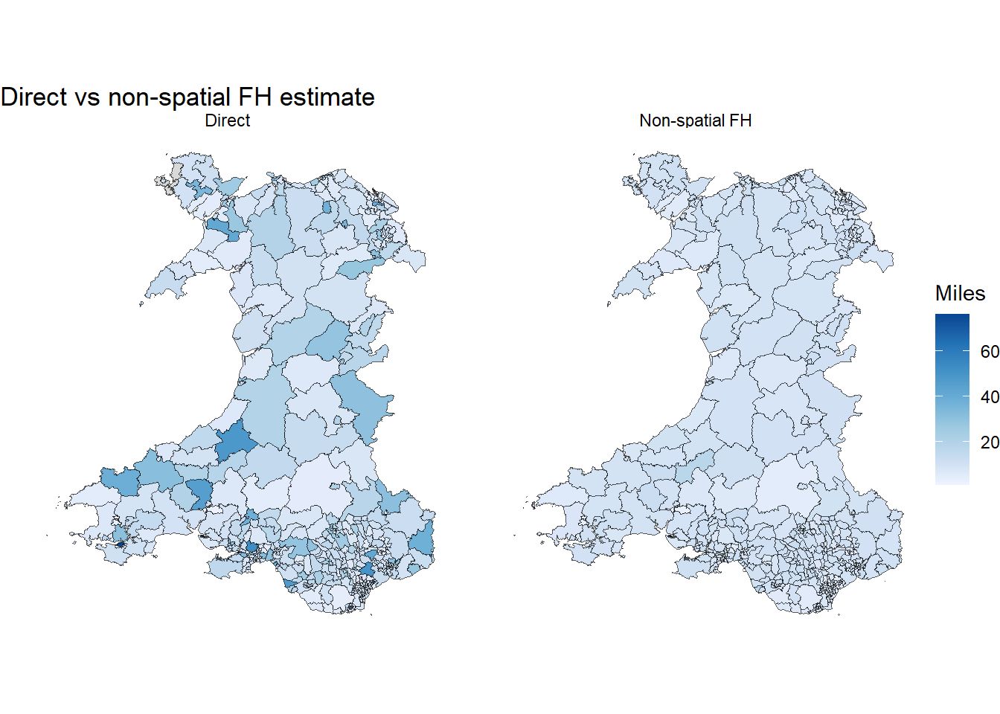
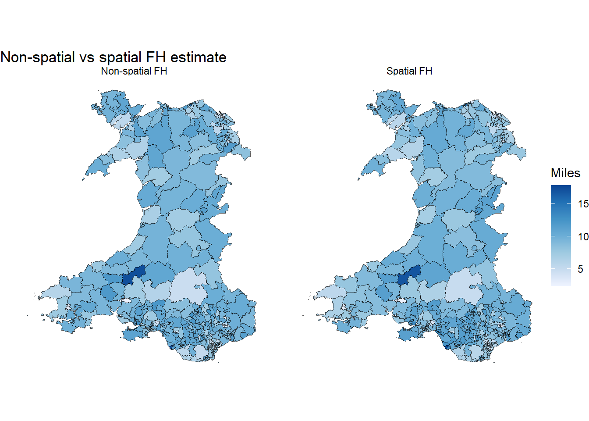
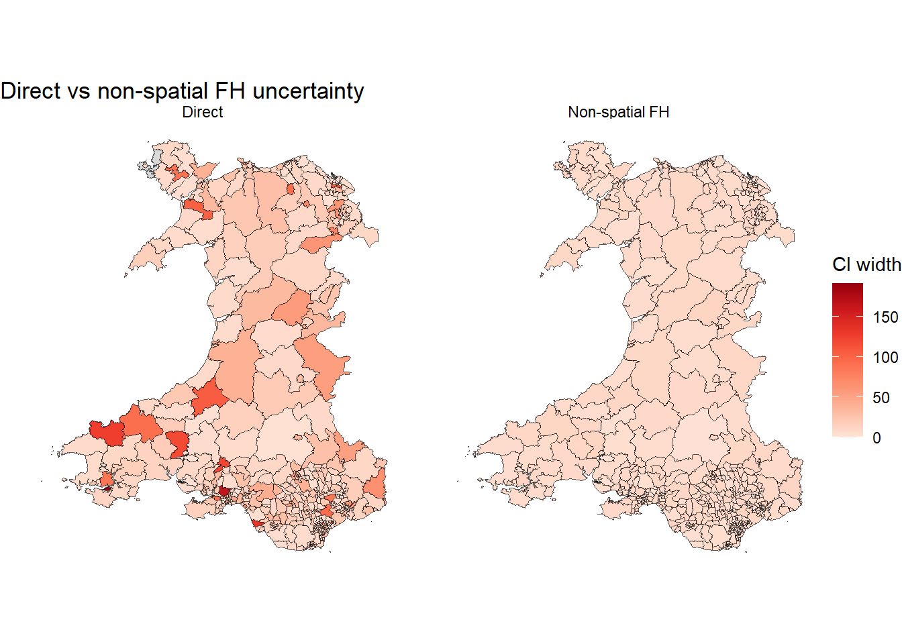
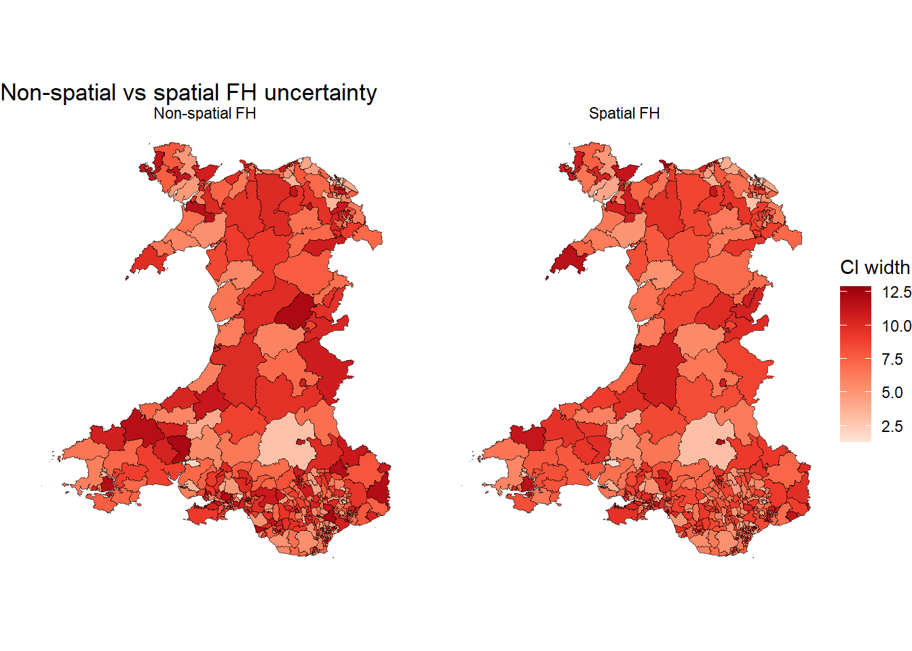

library(dplyr)
library(readr)
library(stringr)
library(tidyr)
library(sf)
library(ggplot2)
library(patchwork)
library(survey)
library(SUMMER)
library(spdep)
# Load analysis-ready data into a temp folder
zip_tmp <- tempfile(fileext = ".zip")
url <- "https://raw.githubusercontent.com/shaunhoang/tutorial-site/main/data/tutorial-clean-data.zip"
download.file(url, zip_tmp, mode = "wb")
unzip(zip_tmp, exdir = tempdir())
base_path <- file.path(tempdir(), "clean")
# Load shapefiles for plotting
boundary_zip <- tempfile(fileext = ".zip")
boundary_url <- "https://raw.githubusercontent.com/shaunhoang/tutorial-site/main/data/tutorial-boundaries.zip"
download.file(boundary_url, boundary_zip, mode = "wb")
unzip(boundary_zip, exdir = tempdir())
msoa_boundaries <- st_read(
file.path(tempdir(), "boundaries", "boundaries-msoa.geojson"),
quiet = TRUE
) |>
rename(domain_id = MSOA21CD) |>
filter(str_starts(domain_id, "W"))
msoa_domains <- msoa_boundaries |>
st_drop_geometry() |>
select(domain_id) |>
arrange(domain_id)Area-Level Estimation (Fay-Herriot)
The Fay-Herriot (FH) model for area-level estimation improves direct estimates that are too noisy, unstable, or unavailable for some areas by borrowing strengths from area-level covariates and the spatial structure.
1 Understanding the basic Fay-Herriot model
The Fay-Herriot model is an area-level small area estimation model. It combines two sources of information for each estimation area:
- the direct survey estimate for the estimation area, and
- the model-based prediction from covariates.
Their relationship can be written as:
\[ \hat{\theta}^{DIR}_d = x_d^\top \beta + u_d + e_d \]
where:
- \(\hat{\theta}^{DIR}_d\) is the direct survey estimate for area \(d\);
- \(x_d^\top \beta\) is the part explained by covariates (i.e., model prediction);
- \(u_d\) is the area-specific unexplained effect;
- \(e_d\) is the survey sampling error.
The Fay-Herriot estimate is then a weighted average between the direct estimate and the model-based prediction:
\[ \tilde{\theta}^{FH}_d = \gamma_d \hat{\theta}^{DIR}_d + (1-\gamma_d)x_d^\top\hat{\beta} \]
The shrinkage weight \(\gamma_d =\frac{\sigma_u^2}{\sigma_u^2 + \psi_d}\) controls how much the final estimate relies on the direct survey estimate versus the model-based prediction, using sampling variance \(\psi_d\) and between-area unexplained variance \(\sigma_u^2\) (i.e., variance of \(u_d\)).
- If \(\psi_d\) is small (the direct estimate is precise), \(\gamma_d\) is closer to 1 and the FH estimate stays close to the direct estimate;
- If \(\psi_d\) is large (the direct estimate is noisy), \(\gamma_d\) is closer to 0 and the FH estimate is pulled more strongly toward the model-based prediction;
- If \(\sigma_u^2\) is large (strong unexplained differences among areas), the FH estimate gives more weight to the direct estimate.
- If \(\sigma_u^2\) is small (weak unexplained differences among areas), the FH estimate is pulled more strongly toward the model-based prediction.
Essentially, the Fay-Herriot model evaluates how reliable the direct estimates are. Reliable direct estimates are mostly preserved, while noisy direct estimates borrow more information from the model.
2 Spatial structure
The basic Fay-Herriot model usually assumes that the unexplained area effects \(u_d\) are independent after accounting for covariates. In urban research, this assumption is often unrealistic. Nearby areas may share infrastructure, socio-demographic profiles, transport conditions, etc. As a result, neighbouring areas may still have similar unexplained effects even after covariates have been included.
A spatial Fay-Herriot model relaxes this independence assumption by allowing the unexplained area effects to be spatially related. One way to express this is:
\[ u = \rho W u + \eta \]
where:
- \(u\) is the vector of unexplained area effects;
- \(W\) is a spatial weights matrix describing which areas are neighbours (based on adjacency, distance, etc.);
- \(\rho\) controls the strength of spatial dependence;
- \(\eta\) is the remaining non-spatial random variation.
The weight matrix \(W\) defines which areas are treated as neighbours. The spatial Fay-Herriot model then estimates whether the unexplained effects in neighbouring areas tend to be similar.
- If neighbouring areas have similar unexplained effects, the model estimates stronger spatial dependence. For noisy areas, the final estimate is shifted toward values suggested by neighbouring areas and the model prediction. This is also called spatial smoothing.
- If neighbouring areas do not have similar unexplained effects, the spatial component has little influence. The model behaves more like a non-spatial Fay-Herriot model.
There are several ways to define the spatial weights matrix \(W\). The most common approach is contiguity-based adjacency, where two areas are neighbours if their boundaries touch.

In practice, the spatial weights matrix is a modelling assumption. It should be checked carefully, especially for islands, coastal areas, or fragmented geographies, because isolated areas or unusual neighbour links can strongly affect spatial smoothing.
3 Bayesian vs. Frequentist approach in SAE
In small-area estiomation, there are two statistical approaches in treating unknown quantities such as \(\beta\), \(\sigma_u^2\), and \(\gamma_d\), specificially how they are estimated and how uncertainty is interpreted.
- In the frequentist approach, unknown quantities such as \(\beta\), \(\sigma_u^2\), and \(u_d\) are estimated as fixed unknowns. Typical outputs are one point estimate per area (EBLUP), uncertainty measures such as RMSE, and confidence intervals.
- In the Bayesian approach, these unknown quantities are instead treated as uncertain and assigned prior distributions. Typical outputs are posterior means, credible intervals, and probability summaries.

In practice, the Bayesian approach is preferred for many reasons: - It is more flexible when dealing with areas with little or no survey data. If an area has no direct estimate, the model can still predict a plausible value’s probability distribution. In a freqeuentist approach, the estimates for no-data areas are simply the modelled prediction based on the covariates. - Reporting uncertainty as propability distributions faciliates communication in policy settings and more useful for decision-making.
4 [Pratical] Area-Level Estimation
In this workbook, we fit Bayesian area-level FH models for the mean commute distance among commuters by MSOA estimand using the indicator commute_distance.
The workflow starts from the same survey indicator file used in direct estimation. We first recreate the direct estimates and their sampling variances, then pass those area-level inputs into SUMMER::smoothArea() with MSOA-level covariates.
4.1 Setup
4.2 Load Indicator and Covariates
Load the commute_distance indicator file. This indicator is continuous and is defined among respondents with a valid commute distance.
survey_indicator_commute <- read_csv(
file.path(base_path, "ind_weight_commute_distance.csv"),
show_col_types = FALSE
) |>
filter(
!is.na(indicator),
!is.na(weight),
!is.na(domain_id),
!is.na(strata)
)Next, load the MSOA-level covariates. For this estimand, we use variables that plausibly relate to commute distance: population density, the share of commuters travelling by car or van, and the share of households with access to a car or van. These are loaded on their original scale first, then standardised before model fitting.
covariates_commute <- read_csv(
file.path(base_path, "covariates_msoa.csv"),
show_col_types = FALSE
) |>
transmute(
domain_id,
cov_pop_density,
cov_share_car_commute,
cov_share_hh_withcar
) |>
arrange(domain_id)
head(covariates_commute)# A tibble: 6 × 4
domain_id cov_pop_density cov_share_car_commute cov_share_hh_withcar
<chr> <dbl> <dbl> <dbl>
1 W02000001 62.8 0.692 0.863
2 W02000002 53.1 0.628 0.901
3 W02000003 2298. 0.625 0.680
4 W02000004 99.2 0.670 0.905
5 W02000005 100 0.616 0.889
6 W02000006 152. 0.709 0.8254.3 Direct Estimates
The direct estimate is recreated here so the Bayesian FH model receives the direct estimate and its sampling variance in the format expected by smoothArea(). Because this estimand is a mean, we use the Hájek-style weighted mean from the survey design.
design_commute <- survey::svydesign(
ids = ~1,
strata = ~strata,
weights = ~weight,
data = survey_indicator_commute
)
commute_mean <- survey::svyby(
formula = ~indicator,
by = ~domain_id,
design = design_commute,
FUN = survey::svymean,
vartype = "se",
na.rm = TRUE
) |>
tibble::as_tibble()
direct_est_commute <- commute_mean |>
transmute(
domain_id,
direct = indicator,
variance = se^2,
direct_lower = direct - 1.96 * sqrt(variance),
direct_upper = direct + 1.96 * sqrt(variance),
direct_ci_width = direct_upper - direct_lower
)
head(direct_est_commute)# A tibble: 6 × 6
domain_id direct variance direct_lower direct_upper direct_ci_width
<chr> <dbl> <dbl> <dbl> <dbl> <dbl>
1 W02000001 9.70 6.77 4.60 14.8 10.2
2 W02000002 11.2 1.84 8.56 13.9 5.31
3 W02000003 10.6 7.56 5.26 16.0 10.8
4 W02000005 25.3 101. 5.64 45.0 39.4
5 W02000006 35.1 528. -9.91 80.2 90.1
6 W02000007 9.91 4.70 5.66 14.2 8.494.4 Fit Fay-Herriot Model
The model below is a non-spatial Bayesian Fay-Herriot model with covariates. For smoothArea(), the direct-estimate input must have the domain ID in the first column, the direct estimate in the second column, and the sampling variance in the third column.
Before fitting the FH model, we standardise the direct estimates and the covariates. This keeps the Gaussian area-level model on a numerically stable scale. After fitting, the FH estimates are transformed back to the original reporting scale: mean commute distance in miles.
direct_center <- mean(direct_est_commute$direct, na.rm = TRUE)
direct_scale <- sd(direct_est_commute$direct, na.rm = TRUE)
direct_est_summer <- direct_est_commute |>
transmute(
domain_id,
direct = (direct - direct_center) / direct_scale,
variance = variance / direct_scale^2
)
covariates_commute_summer <- covariates_commute |>
transmute(
domain_id,
cov_pop_density_z = as.numeric(scale(cov_pop_density)),
cov_share_car_commute_z = as.numeric(scale(cov_share_car_commute)),
cov_share_hh_withcar_z = as.numeric(scale(cov_share_hh_withcar))
)
fh_commute_fit <- SUMMER::smoothArea(
formula = direct ~ cov_pop_density_z +
cov_share_car_commute_z +
cov_share_hh_withcar_z,
domain = ~domain_id,
direct.est = direct_est_summer,
X.domain = covariates_commute_summer,
adj.mat = NULL,
transform = "identity",
level = 0.95
)There are domains in X.domain not in design/direct estimates.
Generating estimates for all domains in X.domain.Extract the posterior mean, posterior variance, and 95% credible interval for each MSOA.
fh_est_commute <- fh_commute_fit$iid.model.est |>
tibble::as_tibble() |>
transmute(
domain_id = domain,
fh_mean = (mean * direct_scale) + direct_center,
fh_variance = var * direct_scale^2,
fh_lower = (lower * direct_scale) + direct_center,
fh_upper = (upper * direct_scale) + direct_center,
fh_ci_width = fh_upper - fh_lower
)
head(fh_est_commute)# A tibble: 6 × 6
domain_id fh_mean fh_variance fh_lower fh_upper fh_ci_width
<chr> <dbl> <dbl> <dbl> <dbl> <dbl>
1 W02000001 9.56 4.03 5.52 13.4 7.88
2 W02000002 10.9 1.57 8.74 13.5 4.80
3 W02000003 9.58 4.26 5.96 13.9 7.92
4 W02000004 9.49 8.30 3.86 15.1 11.3
5 W02000005 10.4 7.03 4.96 15.6 10.6
6 W02000006 9.73 8.48 4.07 15.3 11.2 Check that the modelled estimates are on the expected reporting scale.
bind_rows(
direct_est_commute |>
summarise(
method = "Direct",
min = min(direct, na.rm = TRUE),
median = median(direct, na.rm = TRUE),
max = max(direct, na.rm = TRUE)
),
fh_est_commute |>
summarise(
method = "Non-spatial FH",
min = min(fh_mean, na.rm = TRUE),
median = median(fh_mean, na.rm = TRUE),
max = max(fh_mean, na.rm = TRUE)
)
)# A tibble: 2 × 4
method min median max
<chr> <dbl> <dbl> <dbl>
1 Direct 1 10.5 76.2
2 Non-spatial FH 2.47 9.27 17.34.5 Fit Spatial Fay-Herriot Model
The non-spatial FH model assumes that the remaining unexplained area effects are independent after accounting for covariates. We can relax this by adding a spatial adjacency matrix. Here, we use queen adjacency, where two MSOAs are neighbours if they share either a boundary segment or a point.
msoa_boundaries_ordered <- msoa_boundaries |>
arrange(domain_id)
msoa_neighbours <- spdep::poly2nb(
msoa_boundaries_ordered,
queen = TRUE,
row.names = msoa_boundaries_ordered$domain_id
)
adjacency_matrix <- spdep::nb2mat(
msoa_neighbours,
style = "B",
zero.policy = TRUE
)
rownames(adjacency_matrix) <- msoa_boundaries_ordered$domain_id
colnames(adjacency_matrix) <- msoa_boundaries_ordered$domain_idThe spatial FH model uses the same direct estimates and covariates as the non-spatial model, but adds the adjacency matrix through adj.mat.
spatial_fh_commute_fit <- SUMMER::smoothArea(
formula = direct ~ cov_pop_density_z +
cov_share_car_commute_z +
cov_share_hh_withcar_z,
domain = ~domain_id,
direct.est = direct_est_summer,
X.domain = covariates_commute_summer,
adj.mat = adjacency_matrix,
transform = "identity",
level = 0.95
)There are domains in X.domain not in design/direct estimates.
Generating estimates for all domains in X.domain.Extract the posterior estimates from the spatial model.
spatial_fh_est_commute <- spatial_fh_commute_fit$bym2.model.est |>
tibble::as_tibble() |>
transmute(
domain_id = domain,
spatial_fh_mean = (mean * direct_scale) + direct_center,
spatial_fh_variance = var * direct_scale^2,
spatial_fh_lower = (lower * direct_scale) + direct_center,
spatial_fh_upper = (upper * direct_scale) + direct_center,
spatial_fh_ci_width = spatial_fh_upper - spatial_fh_lower
)
head(spatial_fh_est_commute)# A tibble: 6 × 6
domain_id spatial_fh_mean spatial_fh_variance spatial_fh_lower
<chr> <dbl> <dbl> <dbl>
1 W02000001 9.39 3.75 5.43
2 W02000002 10.8 1.57 8.37
3 W02000003 9.65 4.12 6.24
4 W02000004 9.25 7.58 4.54
5 W02000005 9.90 9.18 4.00
6 W02000006 9.49 7.32 4.46
# ℹ 2 more variables: spatial_fh_upper <dbl>, spatial_fh_ci_width <dbl>4.6 Compare Direct and FH Estimates
The comparison below checks whether the two FH models fill the coverage gap left by direct estimation and whether their uncertainty intervals are narrower than the direct-estimate intervals for areas where direct estimates are available.
commute_comparison <- msoa_domains |>
left_join(direct_est_commute, by = "domain_id") |>
left_join(fh_est_commute, by = "domain_id") |>
left_join(spatial_fh_est_commute, by = "domain_id") |>
mutate(
has_direct = !is.na(direct),
has_fh = !is.na(fh_mean),
has_spatial_fh = !is.na(spatial_fh_mean),
fh_ci_width_change = fh_ci_width - direct_ci_width,
spatial_fh_ci_width_change = spatial_fh_ci_width - direct_ci_width,
spatial_minus_nonspatial_ci_width = spatial_fh_ci_width - fh_ci_width
)
commute_comparison |>
summarise(
areas_total = n(),
areas_with_direct = sum(has_direct),
areas_with_nonspatial_fh = sum(has_fh),
areas_with_spatial_fh = sum(has_spatial_fh),
median_direct_ci_width = median(direct_ci_width, na.rm = TRUE),
median_fh_ci_width = median(fh_ci_width[has_direct], na.rm = TRUE),
median_spatial_fh_ci_width = median(spatial_fh_ci_width[has_direct], na.rm = TRUE),
median_nonspatial_ci_width_change = median(fh_ci_width_change, na.rm = TRUE),
median_spatial_ci_width_change = median(spatial_fh_ci_width_change, na.rm = TRUE),
median_spatial_minus_nonspatial_ci_width = median(spatial_minus_nonspatial_ci_width, na.rm = TRUE)
) |>
pivot_longer(
cols = everything(),
names_to = "diagnostic",
values_to = "value"
)# A tibble: 10 × 2
diagnostic value
<chr> <dbl>
1 areas_total 408
2 areas_with_direct 407
3 areas_with_nonspatial_fh 408
4 areas_with_spatial_fh 408
5 median_direct_ci_width 11.9
6 median_fh_ci_width 7.81
7 median_spatial_fh_ci_width 7.75
8 median_nonspatial_ci_width_change -3.77
9 median_spatial_ci_width_change -4.03
10 median_spatial_minus_nonspatial_ci_width -0.245The FH models improve the direct-estimation results by filling any no-data gaps and reducing uncertainty for many areas with weak direct evidence. The spatial model adds one further assumption: neighbouring MSOAs may have similar unexplained effects after accounting for covariates. If the spatial CI widths are smaller than the non-spatial FH widths, the adjacency structure is adding useful information. If the spatial and non-spatial results are very similar, most of the improvement is coming from the covariates and the general area-level random effect rather than from spatial smoothing.
4.7 Visualise Estimates and Uncertainty
The maps below compare the estimates improvements, from direct estimates to non-spatial FH estimates, then to spatial FH estimates.
commute_map_data <- msoa_boundaries |>
left_join(commute_comparison, by = "domain_id")
commute_estimate_direct_fh <- commute_map_data |>
select(direct, fh_mean, geometry) |>
rename(
`Direct` = direct,
`Non-spatial FH` = fh_mean
) |>
pivot_longer(
cols = c(`Direct`, `Non-spatial FH`),
names_to = "method",
values_to = "estimate"
)
ggplot(commute_estimate_direct_fh) +
geom_sf(aes(fill = estimate)) +
facet_wrap(~method) +
scale_fill_distiller(palette = "Blues", direction = 1, na.value = "grey85") +
labs(title = "Direct vs non-spatial FH estimate", fill = "Miles") +
theme_void()
commute_estimate_fh_spatial <- commute_map_data |>
select(fh_mean, spatial_fh_mean, geometry) |>
rename(
`Non-spatial FH` = fh_mean,
`Spatial FH` = spatial_fh_mean
) |>
pivot_longer(
cols = c(`Non-spatial FH`, `Spatial FH`),
names_to = "method",
values_to = "estimate"
)
ggplot(commute_estimate_fh_spatial) +
geom_sf(aes(fill = estimate)) +
facet_wrap(~method) +
scale_fill_distiller(palette = "Blues", direction = 1, na.value = "grey85") +
labs(title = "Non-spatial vs spatial FH estimate", fill = "Miles") +
theme_void()
Next compare the uncertainities (CI widths) in the same two steps.
commute_uncertainty_direct_fh <- commute_map_data |>
select(direct_ci_width, fh_ci_width, geometry) |>
rename(
`Direct` = direct_ci_width,
`Non-spatial FH` = fh_ci_width
) |>
pivot_longer(
cols = c(`Direct`, `Non-spatial FH`),
names_to = "method",
values_to = "ci_width"
)
ggplot(commute_uncertainty_direct_fh) +
geom_sf(aes(fill = ci_width)) +
facet_wrap(~method) +
scale_fill_distiller(palette = "Reds", direction = 1, na.value = "grey85") +
labs(title = "Direct vs non-spatial FH uncertainty", fill = "CI width") +
theme_void()
commute_uncertainty_fh_spatial <- commute_map_data |>
select(fh_ci_width, spatial_fh_ci_width, geometry) |>
rename(
`Non-spatial FH` = fh_ci_width,
`Spatial FH` = spatial_fh_ci_width
) |>
pivot_longer(
cols = c(`Non-spatial FH`, `Spatial FH`),
names_to = "method",
values_to = "ci_width"
)
ggplot(commute_uncertainty_fh_spatial) +
geom_sf(aes(fill = ci_width)) +
facet_wrap(~method) +
scale_fill_distiller(palette = "Reds", direction = 1, na.value = "grey85") +
labs(title = "Non-spatial vs spatial FH uncertainty", fill = "CI width") +
theme_void()
Finally, inspect the areas that had no direct estimate but now have FH estimates.
commute_comparison |>
filter(!has_direct, has_spatial_fh) |>
arrange(desc(spatial_fh_mean)) |>
select(
domain_id,
fh_mean,
fh_lower,
fh_upper,
fh_ci_width,
spatial_fh_mean,
spatial_fh_lower,
spatial_fh_upper,
spatial_fh_ci_width
) domain_id fh_mean fh_lower fh_upper fh_ci_width spatial_fh_mean
1 W02000004 9.485617 3.864808 15.13427 11.26946 9.253374
spatial_fh_lower spatial_fh_upper spatial_fh_ci_width
1 4.54335 15.35508 10.811734.8 Validation
4.9 Final thoughts
The FH models do not create new survey observations. Instead, they produce statistically informed estimates for weak-data or no-data areas by combining the covariate relationship learned from observed areas with estimated between-area variation. The spatial model further adds neighbourhood structure on top of this.